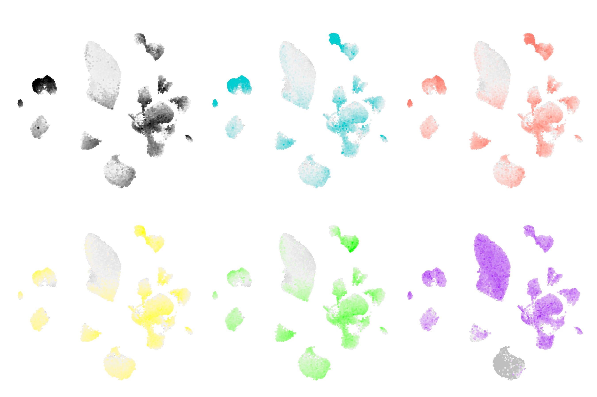
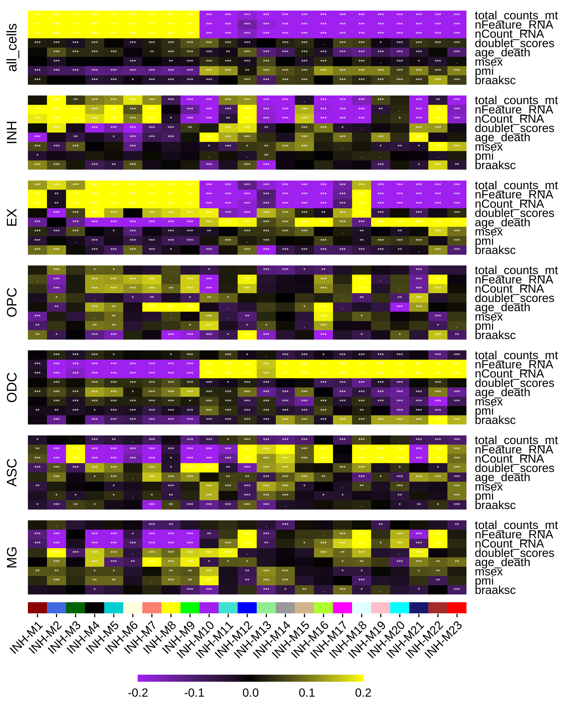
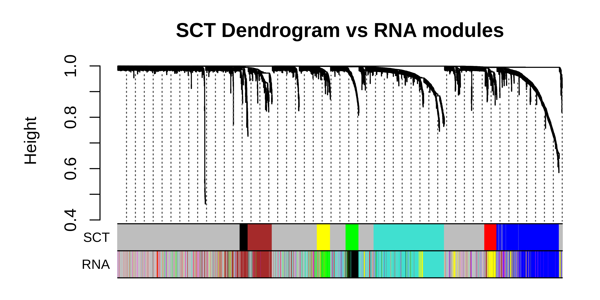

Vignettes overview
hdWGCNA.RmdCo-expression network analysis
These tutorials cover the essentials of performing co-expression network analysis in single-cell transcriptomics data, and visualizing the key results.
hdWGCNA in single-cell data
This tutorial covers the essential functions to construct a co-expression network in single-cell transcriptomics data with hdWGCNA.

hdWGCNA in spatial transcriptomics data
This tutorial covers the essential functions to construct a co-expression network in spatial transcriptomics data with hdWGCNA.

Network visualization
This tutorial highlights several approaches for visualizing the hdWGCNA co-expression networks.

Biological context for co-expression modules
These tutorials will provide further biological context for our co-expression modules, potentially revealing what experimental conditions and biological processes that these modules are involved in.
Differential module eigengene (DME) analysis
This tutorial covers how to compare module eigengenes between experimental groups.

Module trait correlation
This tutorial covers how to correlate continuous and categorical variables with module eigengenes or module expression scores, revealing which modules are related to different experimental conditions or covariates.

Enrichment analysis
This tutorial shows how to use Enrichr to compare the gene members of each co-expression module to curated gene lists, thereby pointing towards the biological functions of the co-expression modules.

Exploring modules in external datasets
Projecting modules to new datasets
This tutorial covers how to project co-expression modules from a reference to a query dataset.

Module preservation and reproducibility
This tutorial covers statistical methods for assessing the preservation and reproducibility of co-expression networks using external datasets.

Cross-species and cross-modality analysis
This tutorial covers how to project co-expression modules from a reference to a query dataset for special cases where the data modality or the species do not match between the reference and the query.

Other
Module customization
This tutorial covers how to change the default names and colors for hdWGCNA modules.

Using SCTransform normalized data
This tutorial covers how to use SCTransform normalized data in hdWGCNA.
